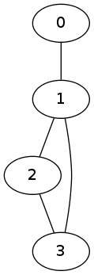
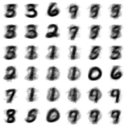
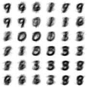
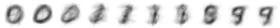

Self Organizing Maps (also known as Kohonen Networks) is a class of unsupervised classification algorithms that descend from Neural Networks. One distinguishing feature of SOM algorithms is that they can be used to transform a high dimensional dataset into a visual form which is usually a discrete lattice of small dimension.
Today, I will implement a SOM algorithm in lisp. I will use undirected graphs to encode topologies of which discrete lattices are specific examples.
As with any classification problem, we have a dataset D = {x(1), …, x(m)} where this time each x(i) is a vector of dimension n. We would like to develop a classification scheme α: D → {1, …, p} where p is determined beforehand. But, instead of assuming that each site 1, …, p is an independent discrete entity, we will assume that there is topology. That is some sites are neighbors, ie. within a vicinity of each other. Since we work with finite sets, the best description of such a neighborhood system is by using a sub-basis for a topology. This data can also be described by undirected graph.
Here is such an example: assume we have 4 classes, conveniently labelled by 0,1,2 and 3. Assume we are given the following neighborhood system:
We can represent this datum with an undirected graph as follows:

Our algorithm will utilize the underlying topology of the classes.
Our algorithm will use a undirected graph (indicating a topology on the classes) in which every vertex (class) is labelled (called weights) by a numerical vector of the same dimension as the dimensions of the vectors in our dataset D. We will perform iterations on this graph. In each iteration, we take a small sample S of points from D. Then for each v ∈ S we find the vertex α whose weight ω(α) is closest to v, measured by a fixed distance function. Then we update the weight vector ω(α) using v, and every ω(β) where β runs over all neighbors of α. In order to simplify our algorithm, we will assume that every vertex is neighboring itself so that when we iterate over the neighbors of a vertex α, we also update the weight ω(α). The update procedure is described below in detail. We finish the iteration when weights stabilize.
The update procedure is of the form w = w + ϕ(w,v)(v−w) where w is the weight of a vertex and v is the data point. we would like to have adjustment parameter ϕ(w,v) depend only on the distance d(w,v), and preferably a fast decreasing one too.
We describe our algorithm in pseudo-code as follows:
Algorithm SelfOrganizingMap
Input:
D <- dataset of vectors, each of dimension n
Top <- a topology of classes in the form of a
neighborhood subbasis
W <- an initial set of weight vectors for each class
dist <- a distance measure for vectors of dimension n
epochs <- the number of iterations
Output:
W <- a final set of stabilized weight vectors
Begin
Repeat epochs many times
Let S be a randomly chosen small sample from D
For each v in S do
Let alpha be the vertex such that its weight
vector W(alpha) is the closest weight
vector to v among all vertices.
For each neighboring vertex beta of alpha do
Update beta as
W(beta) <- W(beta) + phi(d(v,beta))*(v - beta)
End
End
End
Return(W)
EndI will implement the algorithm bottom up: let me start with finding the closest weight vector to a given vector.
(defun find-closest (v cloud dist)
(let ((i 0)
(res 1d10)
(n (length cloud))
temp)
(dotimes (j n)
(setf temp (funcall dist v (elt cloud j)))
(if (< temp res)
(progn (setf res temp)
(setf i j))))
(cons i res)))Next, out update function.
(defun update (d v w &optional (rate 1.1))
(map 'vector (lambda (i j) (+ i (* (/ rate (+ 1.0d0 d)) (- j i)))) v w))In the algorithm, I will need to take a small sample of vectors. I will do this using their indices in a list/array:
(defun sample (n upper-bound)
(loop repeat n collect (random upper-bound)))Finally, here is our implementation:
(defun train-som (data sample-size top weights epochs dist &optional (rate 1.1))
(let* ((m (length data))
(k (truncate (* m sample-size)))
(copy-w (copy-list weights)))
(dotimes (i epochs)
(let* ((S (mapcar (lambda (x) (elt data x)) (sample k m))))
(dolist (v S)
(let* ((w (find-closest v copy-w dist))
(neigh (cdr (elt top (car w)))))
(dolist (x neigh)
(setf (elt copy-w x)
(update (cdr w) (elt copy-w x) v rate)))))))
copy-w))The parameters are
data which is going to be a list of vectors,top the topology given as a list of lists of
neighboring vertices for each class,weights an initial weight system (usually randomly
assigned),epochs the number of iterationsdist the distance functionrate the learning rateFor this example, I will use the MNIST dataset of hand-written digits from Yann LeCun’s site. First I will need to load up the data. The format of the data files is explained in LeCun’s website. I have two datasets: one for the real classification of the data points (which digit it is) and the other is a 29x29 array of pixel values ranging from 0 to 255.
(defun get-term (in)
(let ((temp 0))
(loop for i from 1 to 4 do
(setf (ldb (byte 8 (* 8 (- 4 i))) temp) (read-byte in)))
temp))
(defun read-labels (file-name)
(with-open-file (in file-name
:direction :input
:element-type '(unsigned-byte 8))
(let ((magic (get-term in))
(number (get-term in)))
(loop repeat number collect
(ldb (byte 8 0) (read-byte in))))))
(defun read-images (file-name)
(with-open-file (in file-name
:direction :input
:element-type '(unsigned-byte 8))
(let ((magic (get-term in))
(number (get-term in))
(row (get-term in))
(col (get-term in)))
(loop repeat number collect
(make-array (* row col)
:initial-contents (loop repeat (* row col) collect
(ldb (byte 8 0) (read-byte in))))))))
(defparameter *labels* (read-labels "t10k-labels-idx1-ubyte"))
(defparameter *train* (read-images "t10k-images-idx3-ubyte"))I will define the topology as a toroidal grid in which the opposing diagonal vertices are also connected.
(defparameter ns 6)
(defun lattice (a b)
(let* ((directions (loop for i from a to b collect i)))
(reduce 'append
(mapcar (lambda (x) (mapcar (lambda (y) (list x y))
directions))
directions))))
(defun network (a)
(let ((directions (lattice -1 1))
(frame (lattice 0 a)))
(mapcar (lambda (x) (append (list x)
(mapcar (lambda (y) (mapcar (lambda (i j) (mod (+ i j) ns))
x y))
directions)))
frame)))
(defparameter *topology*
(mapcar (lambda (neigh) (mapcar (lambda (x) (+ (car x) (* ns (cadr x))))
neigh))
(network (1- ns))))The topology is explicitly given below. We have a 6x6 grid (numbered between 0 and 35) and the first term tells us that the vertex 0 is neighbors with 35, 5, 11, 30, 0, 6, 31, 1 and 7.
*topology*
((0 35 5 11 30 0 6 31 1 7) (6 5 11 17 0 6 12 1 7 13)
(12 11 17 23 6 12 18 7 13 19) (18 17 23 29 12 18 24 13 19 25)
(24 23 29 35 18 24 30 19 25 31) (30 29 35 5 24 30 0 25 31 1)
(1 30 0 6 31 1 7 32 2 8) (7 0 6 12 1 7 13 2 8 14)
(13 6 12 18 7 13 19 8 14 20) (19 12 18 24 13 19 25 14 20 26)
(25 18 24 30 19 25 31 20 26 32) (31 24 30 0 25 31 1 26 32 2)
(2 31 1 7 32 2 8 33 3 9) (8 1 7 13 2 8 14 3 9 15)
(14 7 13 19 8 14 20 9 15 21) (20 13 19 25 14 20 26 15 21 27)
(26 19 25 31 20 26 32 21 27 33) (32 25 31 1 26 32 2 27 33 3)
(3 32 2 8 33 3 9 34 4 10) (9 2 8 14 3 9 15 4 10 16)
(15 8 14 20 9 15 21 10 16 22) (21 14 20 26 15 21 27 16 22 28)
(27 20 26 32 21 27 33 22 28 34) (33 26 32 2 27 33 3 28 34 4)
(4 33 3 9 34 4 10 35 5 11) (10 3 9 15 4 10 16 5 11 17)
(16 9 15 21 10 16 22 11 17 23) (22 15 21 27 16 22 28 17 23 29)
(28 21 27 33 22 28 34 23 29 35) (34 27 33 3 28 34 4 29 35 5)
(5 34 4 10 35 5 11 30 0 6) (11 4 10 16 5 11 17 0 6 12)
(17 10 16 22 11 17 23 6 12 18) (23 16 22 28 17 23 29 12 18 24)
(29 22 28 34 23 29 35 18 24 30) (35 28 34 4 29 35 5 24 30 0))Here are the initial weights assigned randomly at each neuron between 0 and 255.
(defparameter *initial-weights*
(loop repeat (* ns ns) collect
(make-array (* 29 29)
:initial-contents
(loop repeat (* 29 29) collect (random 256))))) And we run the SOM code using the L1-distance, a.k.a. taxi-cab distance
(defun taxi-cab (v w)
(/ (reduce '+ (map 'list
(lambda (i j) (abs (- i j)))
v w))
(length v)))
(defparameter step-1 (train-som *train*
0.015
*topology*
*initial-weights*
50
'taxi-cab
1.25))Let me see how it worked:

Let me change the topology and run the code with the same initial weights. This time, I will use an hexagonal toroidal grid.
(defun network (a)
(let ((directions '((0 0) (0 -1) (-1 0) (1 0) (0 1) (1 1)))
(frame (lattice 0 a)))
(mapcar (lambda (x) (append (list x)
(mapcar (lambda (y) (mapcar (lambda (i j) (mod (+ i j) ns))
x y))
directions)))
frame)))
(defparameter *topology*
(mapcar (lambda (neigh) (mapcar (lambda (x) (+ (car x) (* ns (cadr x))))
neigh))
(network (1- ns))))
(defparameter step-1 (train-som *train*
0.015
*topology*
*initial-weights*
50
'taxi-cab
1.25))Let us see the results:

And finally, on a one-dimensional circular grid but with different set of initial weights
(defparameter *topology*
(loop for i from 0 to 9 collect
(mapcar (lambda (x) (mod (+ x i) 10)) '(-1 0 1))))
(defparameter *initial-weights*
(loop repeat 10 collect
(make-array (* 29 29)
:initial-contents
(loop repeat (* 29 29) collect (random 256)))))
(defparameter step-1 (train-som *train*
0.015
*topology*
*initial-weights*
50
'taxi-cab
1.25)) Let us see the results: 
The algorithm heavily depends on the initial topology, let me call it the host topology, of the neural net. However, the data self-assembles itself depending on its own natural topology as far as the host topology accommodates. For example, in the third example above the data assembled itself into basically 3 separate clusters from 0’s to 1’s to 9’s then back to 0’s and some transition states in between. However, in the first example, 1’s and 9’s clustered together (remember the network is toroidal) as 0’s, 2’s and 6’s, also 3’s and 5’s are always neighboring each other.